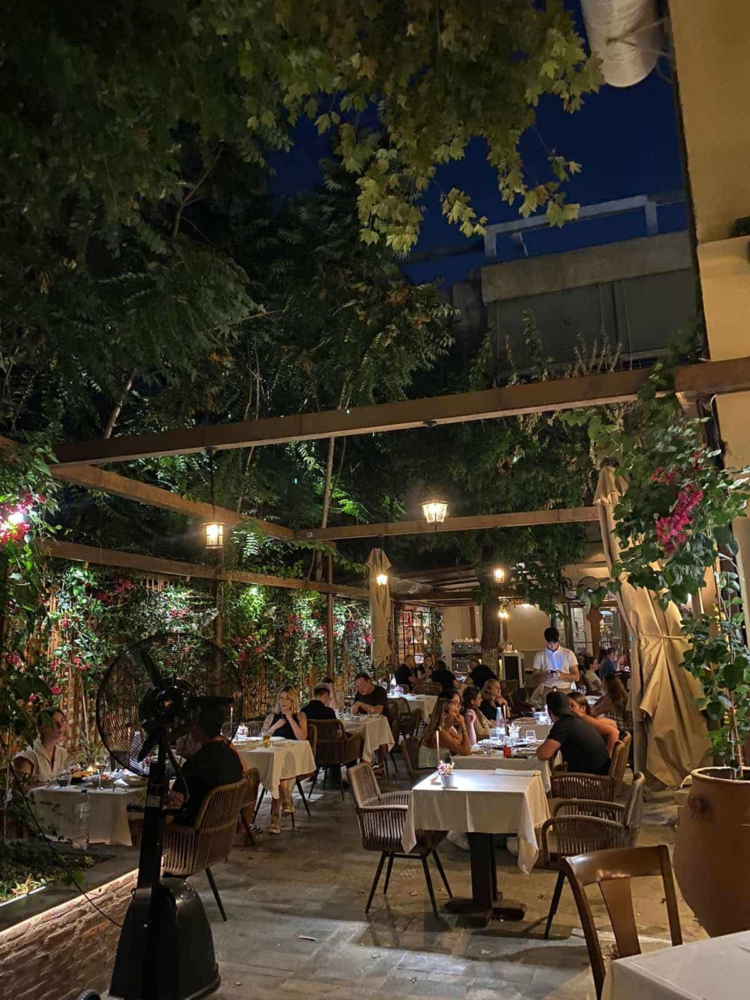

1981
Στον πιο ιστορικό εμπορικό δρόμο της Αθήνας
Από τον 19ο αιώνα η Πανδρόσου ήταν το κέντρο του εμπορίου της πόλης, με τα περίφημα αμπατζίδικα και αργότερα τα εργαστήρια δερμάτινων και λαϊκής τέχνης.
Εδώ, σε μια αυλή που θυμίζει τις παλιές αθηναϊκές, μαγειρεύουμε κλασικές ελληνικές συνταγές με τοπικά υλικά: μακριά από τη φασαρία, αλλά στην καρδιά της πόλης.
Η ιστορία μας